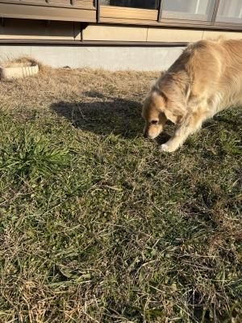

Google・・・ ってば、わかりづら過ぎ(泣)。
GeminiとchatGPTを試しに使い始めて約2週間ほどです。
AIについて調べて行くうち、「Google優秀 ! 」って声が
いろんなところから聞こえて来て、
どっちかに課金するならやっぱりGeminiかなぁ・・・と
だんだん思ってはいる今日この頃・・・なんですが。
Googleのサービスが範囲が広くてたくさんあるが故に
どこまで課金したらどこまでのサービスが使えるのか、
いまいちよくわかんないんだよ・・・アタマ悪すぎ ?? (汗)
例えばnotebookLMってシステムは、ものすごく優秀だと思うけど、
一番最初め、Geminiを立ち上げた時どこから使うのかわからなかった。
・・・てか、そもそもあれはGeminiに含まれたサービスじゃなくて、
独立したサービスなんだよね ?? (と、ワタクシは了解してるけど・・・)
あとは、Veo3とFLOWって動画生成AIは、Geminiを立ち上げても
勝手に起動したりはしないんだよね・・・。
Nano Banana ProはGeminiで使えるのにねぇ。
そもそも、なんでVeo3とFLOWって、動画生成AIが2つあるのよー。
それからAIじゃないけどGoogleのストレージって、どーやって使うんだっけ ??
Google workspaceって、個人でも使えるの ??
Googleの公式HPに行って説明読んでも、「今、私はどんなサービスが使えるの ? 」
が、いまいちピンとこないんだよぅ・・・アタマ悪過ぎ ・・・???
その点、chatGPTはシステムがシンプルっていうか・・・
わかりやすいな〜と思いますヨ。
画像生成のAIも、基本的なchat使ってると勝手に立ち上がるよね。
それと、同じプロンプト使ってどっちのAIも使ってみたりしていると、
若干chatGPTの方がいい感じに狙った答えを出して来てくれたりする気がする・・・
そんで ? 結局どっちがいいんだ ? 自分・・・。
サッカーチームのエンブレムやらロゴやら、はたまたユニフォームまで・・・
なんやかやと、デザインの叩き台は全部AIで出してもらってるので、
どっちもここ10日くらい使いまくっているけど、
結論・・・「どっちも捨てがたい」・・・って、おいぃっ(爆)。
さらに言うと、AIエージェントManusがめっちゃすげーとおもーのよ・・・。
今は課金してない(高いし、お試し期間がめちゃ短い・・・)けど、
無課金でも課金のGeminiとchatGPTと変わらんくらいいい感じデス。
HPなんかもちょちょいと作っちゃうんよ。すごいよね。
サッカーチーム関連のデザインと並行して、実はこそこそとやっていたのが
ブログなどの文章から動画を(解説動画みたいなやつね・・・)
作れないかな ? ってことでね・・・。
文章から動画を簡単に作っちゃうソフトも、あるにはあるんだけど、
シリーズものとして、同一人物をずっと登場させたり、
画像の雰囲気やスタイルを統一したりがけっこう難しいなぁ・・・と。
とはいえ・・・Veo3とFLOWって動画生成AIは(認識したのは昨日なんだけど〜笑)
生成済みの一部の動画だけを修正したり、同一人物で複数の動画を作ることとが
できるみたいなので、今週末ちょっと、いろいろ試してみたいと思っています〜。

きょーはあったかかったでしゅね。もうはるでしゅか ?
しゃいきんママが、ひましゃんとあしょんでくれないでしゅよ・・・。
ぱしょこんのまえにしゅわって、ひましゃんがひっぱりっこのおしゃしょいをしても
またねー・・・ていわれちゃうでしゅ。しょぼんでしゅ・・・